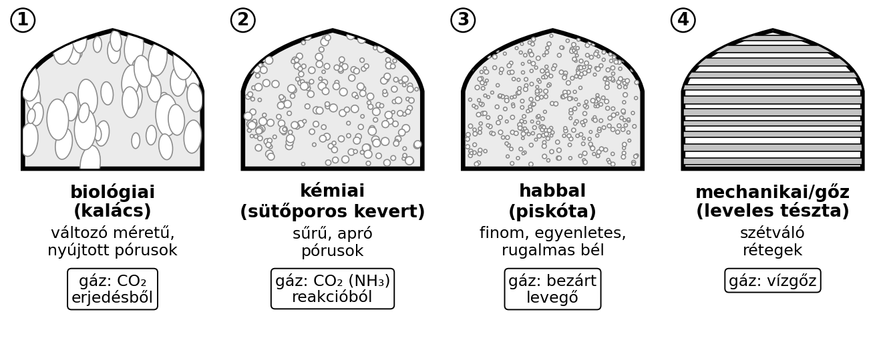

A cukrászműhelyben ugyanaz a liszt egészen más terméket ad, ha más lazítóanyagot használunk. Reggel a briós tésztája lassan, illatosan kel, délután a linzer sütőporral lazul, a mézeskalács pedig szalalkálival lesz lapos, porózus és jól harapható. Ha a lazítóanyagot rosszul választjuk ki, rosszul adagoljuk vagy rossz hőmérsékleten dolgozunk, a termék lapos, tömör, keserű vagy ammóniaszagú lehet. Ezért a lazítóanyagok ismerete nem vegyészi részletkérdés, hanem mindennapi technológiai döntés: a tészta szerkezetét, ízét, színét és eltarthatóságát is befolyásolja.
Definíció. Lazításnak nevezzük azt a technológiai folyamatot, amely a tésztában gázbuborékokat (szén-dioxidot, vízgőzt, ammóniát) vagy bezárt levegőt hoz létre, illetve tart meg, és ezáltal a kisült termék szerkezetét porózussá, könnyűvé, jól haraphatóvá teszi.
A lazítás módjait a gáz keletkezésének vagy a levegő bevitelének forrása szerint csoportosítjuk.
| Lazításmód | Anyag vagy folyamat | Keletkező gáz / hatás | Jellemző termékcsoport |
|---|---|---|---|
| Biológiai | sütőélesztő erjedése | szén-dioxid () | kelt tészták, briós, kalács, fánk |
| Kémiai | sütőpor, szódabikarbóna + sav, szalalkáli, hamuzsír | szén-dioxid () és/vagy ammónia () | omlós sütemények, mézeskalács, muffin, palacsinta |
| Mechanikai (gőz) | a tészta vizének elgőzölgése, leveles szerkezet | vízgőz () | vajas és leveles tészta, forrázott tészta |
| Habbal | tojásfehérje, tejszín vagy más habverés | bezárt levegő | piskóta, habcsók, mousse |
| Zsiradékkal | vaj, margarin vagy zsír kikeverése | bezárt levegő, majd gőz | kevert omlós és kevert tészták |
Mindegyik mód más tésztaszerkezetet ad. A valódi cukrászati gyakorlatban gyakran több lazítási mód is együtt hat: például a leveles élesztős tésztát az élesztő és a gőz egyszerre emeli.

Az ábra négy kisült termék metszetét veti össze: a biológiai lazítású kalács pórusai változó méretűek és nyújtottak (1), a sütőporos kevert tésztáé sűrűek és aprók (2), a habbal lazított piskóta béle finom és egyenletes (3), a leveles tésztában a gőz szétválasztja a rétegeket (4). A bélzet képe a lazítás hibáinak felismerését is segíti.
Továbbvitt eredmény. A biológiai lazítás részletes technológiáját a(z) Biológiai lazítás: az élesztő működése és az erjedés alfejezet tárgyalja. A szalalkáli és a hamuzsír használatát a hagyományos mézes tésztáknál a(z) Mézes tészták: kémiai lazítás, hagyományos és gyors érlelés alfejezet viszi tovább.
Definíció. A sütőélesztő (Saccharomyces cerevisiae) élő, egysejtű gombákból álló biológiai lazítóanyag. A megfelelő körülmények között az élesztősejtek a tésztában lévő cukrokat erjesztik, és közben szén-dioxidot és etanolt termelnek.
Az erjedés egyszerűsített egyenlete:
A keletkező szén-dioxid a sikér hálójában megreked, a tészta térfogata nő, a sütés során a gázok tovább tágulnak, az etanol pedig nagyrészt elpárolog.
| Típus | Jellemző | Felhasználás |
|---|---|---|
| Friss (préselt) élesztő | nedvességtartalma magas, rövid eltarthatóságú, hűtést igényel | közvetlenül morzsolható a lisztbe vagy felfuttatható |
| Aktív szárított élesztő | szárított, szemcsés, hosszabb eltarthatóságú | langyos folyadékban fel kell oldani/felfuttatni, mielőtt a tésztába kerül |
| Instant élesztő | finom por, alacsonyabb nedvességtartalom | közvetlenül a liszthez keverhető, felfuttatása általában nem szükséges |
A friss és szárított élesztő közötti átszámítás gyártónként és termékenként eltér. Gyakorlati becslésként 100 g friss élesztő helyett nagyjából 30–50 g szárított élesztőt használhatunk, de mindig a gyártói adatlap az irányadó (ellenőrizendő: gyártói adatlap).
Szabály. A friss élesztőt hűtve, általában 0–8 °C között, zárt csomagolásban kell tárolni, és a csomagoláson jelzett időn belül felhasználni. A szárított és instant élesztőt hűvös, száraz helyen, a gyártó utasítása szerint tartjuk.
Az élesztő aktiválása lépésenként:
Figyelem. 45 °C felett az élesztősejtek károsodnak, 60 °C körül elpusztulnak. A túl forró tej vagy víz ezért „megöli” az élesztőt, és a tészta nem kel meg.
Higiénia. Az élesztő élő mikroorganizmus, de technológiai célra ellenőrzött, élelmiszer-biztonsági szempontból kifogástalan törzs. A csomagolás felbontása után tiszta eszközökkel és kézzel dolgozzunk, és a maradékot visszazárva, hűtve tároljuk. A nyers kelt tészta tárolásánál a hűtési láncot be kell tartani, főleg ha tojást vagy tejet is tartalmaz.
Definíció. A kémiai lazítószerek olyan anyagok, amelyek a tésztában nedvesség és/vagy hő hatására gázt fejlesztenek anélkül, hogy élő mikroorganizmusra lenne szükség.
A szódabikarbóna (nátrium-hidrogén-karbonát, ) önmagában lúgos jellegű anyag. Gázfejlesztéséhez savas közeg vagy magasabb hőmérséklet kell.
Savval például így reagál:
A tésztában a sav származhat íróból, joghurtból, kefirből, citromléből, borkősavból vagy gyümölcsből. Magasabb hőmérsékleten a szódabikarbóna maga is bomlik:
Hiba. Ha a szódabikarbóna nincs megfelelő savval ellensúlyozva, vagy túl nagy adagban használják, a tésztában nátrium-karbonát marad. A termék sárgás, keserű, szappanos mellékízű lehet.
A sütőpor nem egyetlen vegyület, hanem kész keverék. Fő részei:
A kétlépcsős sütőpor egyik savas összetevője már szobahőmérsékleten, a tészta bekeverésekor reagál, a másik csak a sütő hőjére aktiválódik. Ezáltal a tészta már keverés közben is lazul, és a sütés során is van tartalék gázfejlesztés.
A sütőpornál a liszthez viszonyított adagolás a gyártói adatlap szerint változik. Tájékoztató jelleggel a cukrászati gyakorlatban gyakran 1,5–3 % sütőport számolunk a liszt tömegére, azaz 1 kg liszthez 15–30 g sütőport (ellenőrizendő: gyártói adatlap és recept).
A szalalkáli (ammónium-hidrogén-karbonát, ) hőre bomló kémiai lazítószer:
A keletkező ammónia szúrós szagú, de magas hőmérsékleten, vékony, lapos termékből jól el tud távozni. Ezért a szalalkálit főleg olyan termékekhez használják, amelyeket vékonyra nyújtanak, vagy amelyekből a gáz könnyen távozik: lapos mézeskalács, teasütemény, vékony, lapos omlós termék.
Szabály. Tömör, magas termékbe (például kuglófba, muffinba, vastag piskótába) a szalalkáli nem való, mert az ammónia nem tud eltávozni, és a termék kellemetlen, csípős szagú és keserű lesz.
A hamuzsír (kálium-karbonát, ) hagyományos, erősen lúgos kémiai lazítószer, elsősorban mézes tésztákhoz. Savas közegben szén-dioxidot fejleszt (a szódabikarbóna enyhén lúgos, a hamuzsír nem):
A méz természetes savassága és a tészta egyéb összetevői biztosítják a reakciót. A hamuzsír a mézes tészták színét, porozitását és jellegzetes állagát is befolyásolja. Korszerű üzemi környezetben a pontos adagolást grammra kell végezni, mert a túladagolás keserű, lúgos mellékízt adhat.
Figyelem. A hamuzsírt kevés vízben oldva adagoljuk; a szilárd anyag és a tömény oldat bőr- és szemirritáló, nedvszívó: bőrre, szembe ne kerüljön (védőszemüveg, kesztyű; ellenőrizendő: biztonsági adatlap). A szalalkális tészta sütésekor a sütő ajtaját óvatosan nyisd ki, és ne hajolj a kicsapó gőzbe, mert az ammónia szúrós és irritáló; szellőztess.
Jogszabály. Az Európai Unióban a szódabikarbóna, a szalalkáli és a hamuzsír élelmiszer-adalékanyagként szabályozott anyag; E-számmal azonosíthatók. A sütőpor kész keverék, amelynek összetevőit a fogyasztói tájékoztatásról szóló szabályok szerint jelölni kell. A konkrét E-számokat, a felhasználási feltételeket és a megengedett mennyiségeket a mindenkor hatályos adalékanyag-rendelet határozza meg (ellenőrizendő: 1333/2008/EK rendelet és Magyar Élelmiszerkönyv). Az élesztő nem adalékanyag, hanem élelmiszer-összetevő, ezért az összetevők között a megnevezését fel kell tüntetni.
A kémiai lazítók pontos adagolása azért kritikus, mert a gázfejlődés a tésztában azonnal, kémiai reakcióval indul, szemben az élesztővel, amelynek időre van szüksége. A mérésnél tömegre dolgozzunk, ne „késhegynyi” vagy „csomag” mértékre. A csomós sütőport használat előtt szitáljuk vagy keverjük el alaposan, különben a tésztában sötét, keserű gócok keletkezhetnek.
Számítás. Pékáru- vagy cukrászati receptben a sütőpor mennyiségét gyakran a liszt tömegének százalékában adják meg.
Adott: 850 g liszt, a recept szerint 1,8 % sütőpor. Keresett: a szükséges sütőpor tömege.
Gyakorlati kerekítéssel 15 g sütőport mérünk be. A mennyiség nagyságrendileg jól illeszkedik az 1,5–3 %-os tájékoztató tartományba.
Számítás. Élesztős tésztánál a friss élesztő adagját a liszt tömegére számítjuk.
Adott: 600 g liszt, 4 % friss élesztő. Keresett: a szükséges friss élesztő tömege.
Ha szárított élesztőre váltunk, és a gyártói adatlapon 1/3-os arány szerepel, akkor:
Ez csak tájékoztató számítás, mert a szárított élesztő fajtája és a gyártó utasítása eltérhet (ellenőrizendő: gyártói adatlap).
A lazítóanyagok beérkezésekor és felhasználása előtt a következőket vizsgáljuk:
Ellenőrzés. Kis próbával is ellenőrizhetjük a kémiai lazító működését: kevés sütőport langyos vízbe vagy savas folyadékba szórunk. Ha azonnal élénk pezsgést látunk, a szer működik. A friss élesztőt felfuttatással vizsgáljuk.
| Tünet | Ok | Megelőzés / javítás |
|---|---|---|
| A kelt tészta nem kel meg | elöregedett élesztő, túl forró folyadék, só közvetlen érintkezése, túl hideg helyiség | friss élesztő, 25–30 °C-os folyadék, a sót később adjuk a tésztához, megfelelő kelesztési hőmérséklet |
| A sütemény keserű, szappanos ízű | szódabikarbóna túladagolása vagy sav hiánya | pontos mérés, megfelelő savas összetevő, inkább sütőpor használata |
| A mézeskalács csípős, ammóniaszagú | szalalkáli túladagolása, vagy vastag tésztába került, ahonnan az ammónia nem távozott | vékonyra nyújtás, megfelelő adag, elegendő sütési idő és hőfok |
| A süteményben sötét, keserű foltok vannak | csomós, rosszul elkevert sütőpor | szitálás, a sütőport a liszttel alaposan elkeverjük |
| A sütőporos tészta lapos, tömör | kevés lazítószer, túl öreg sütőpor, túl hosszú állás a sütés előtt | megfelelő adag, friss sütőpor, a bekevert tésztát azonnal sütjük |
Egy cukrászműhelyben a mézeskalács-szelet tésztája rendszeresen keserű és szúrós szagú volt. A tésztát vastagabb lapban sütötték, és a receptben a szalalkáli arányát egy korábbi, vékonyabb teasütemény-receptről vették át. A vastagabb tésztából az ammónia nem tudott eltávozni, ezért a termékben maradt. A javítás során a szalalkáli adagját csökkentették, és a tésztát vékonyabbra nyújtották. A termék szaga és íze helyreállt. Az eset tanulsága: a kémiai lazítót nemcsak mennyiségre, hanem a termék alakjára, vastagságára és sütési módjára is tekintettel kell megválasztani.
1. feladat (A)
Definiálja a lazítóanyag fogalmát, és nevezze meg a lazítás öt
módját.
2. feladat (A)
Írja fel szódabikarbóna és sav egyszerűsített reakcióegyenletét, és
nevezze meg a keletkező gázt.
3. feladat (B)
Egy recept 1,2 kg liszthez 2,2 % sütőport ír elő. Számítsa ki a
szükséges sütőpor tömegét grammban, és ellenőrizze, hogy az érték a
jellemző tartományban van-e.
4. feladat (B)
Egy kelt tésztához 750 g lisztre 5 % friss élesztőt számolunk. Mennyi
friss élesztő szükséges? Ha a gyártói átszámítás szerint 1/3 mennyiségű
instant élesztő helyettesíti, mennyi instant élesztőt mérjünk?
5. feladat (C)
Egy tanuló mézeskalácshoz szalalkálit használ, de a tészta vastag, és a
kész termék ammóniaszagú, keserű. Elemezze a hibát: miért keletkezett a
hiba, és hogyan lehet megelőzni?
6. feladat (D)
Végezzen el otthon két kis próbát. (a) Futtasson fel fél kocka (kb. 21
g) friss élesztőt 1 dl langyos, cukros tejben, és figyelje meg a
habzást. (b) Szórjon fél kávéskanál (kb. 2 g) sütőport 1 dl langyos
vízbe, és figyelje meg a pezsgést. Írja le, mit látott, és értékelje,
melyik folyamat biológiai, melyik kémiai.
Önellenőrzés – válaszok
1. feladat (A)
Lazítóanyag: olyan anyag vagy élő szervezet, amely a tésztában gázt
fejleszt vagy levegőt zár be, és ezzel laza, porózus szerkezetet hoz
létre. Az öt lazításmód: biológiai, kémiai, mechanikai (gőz), habbal,
zsiradékkal.
2. feladat (A)
Egyszerűsítve:
.
A keletkező gáz szén-dioxid.
3. feladat (B)
Adott:
,
.
Keresett:
.
Kerekítve 26 g sütőpor. Ellenőrzés: 1 kg liszthez 22 g jut, ami a jellemző 15–30 g-os tájékoztató tartományon belül van (ellenőrizendő: gyártói adatlap).
4. feladat (B)
Friss élesztő:
Gyakorlatilag 37–38 g-ot mérünk. Instant élesztő 1/3-os átszámítással:
Az átszámítás tájékoztató jellegű, a gyártói adatlapot ellenőrizni kell.
5. feladat (C)
Tünet: ammóniaszag, keserű íz. Ok: a szalalkáli hőre ammóniát fejleszt,
és ha a tészta vastag, az ammónia nem tud távozni, hanem visszamarad.
Megelőzés: vékonyra nyújtás, kisebb szalalkáli-adag, megfelelő sütési
hőfok és idő, szellőzés a sütőtérben.
6. feladat (D)
Az élesztős próba biológiai folyamat: az élő élesztő cukorból
szén-dioxidot termel, ezért habzik. A sütőporos próba kémiai folyamat:
nedvesség hatására a savas komponens és a szódabikarbóna azonnal
szén-dioxidot fejleszt. Értékelés: mindkét esetben gázbuborékok
jelenléte jelzi a lazító működését.
A lazítás a tészta gázbuborékokkal való fellazítása. Öt alapmódja van: biológiai, kémiai, mechanikai (gőz), habbal és zsiradékkal. A biológiai lazítóanyag a sütőélesztő, amely cukorból erjedéssel szén-dioxidot és etanolt termel. A friss élesztőt hűtve kell tárolni, langyos, 25–30 °C-os folyadékban célszerű felfuttatni; 60 °C körül elpusztul. A kémiai lazítók közül a szódabikarbóna savas közegben fejleszt szén-dioxidot, a kétlépcsős sütőpor hidegen és melegen is lazít, a szalalkáli hőre szén-dioxidot és ammóniát ad, ezért csak vékony termékhez való, a hamuzsír pedig hagyományos mézes tésztákhoz használt kálium-karbonát. A pontos mérés és a gyártói adatlapok követése azért kritikus, mert a túladagolás keserű, szappanos vagy ammóniaszagú hibákat okoz. A biológiai lazítást a(z) Biológiai lazítás: az élesztő működése és az erjedés, a szalalkálit és hamuzsírt a(z) Mézes tészták: kémiai lazítás, hagyományos és gyors érlelés alfejezet tárgyalja részletesen.
A fejezet a stabil kémiai és cukrásztechnológiai alapokra épít. Ellenőrizendő pontok: a kémiai lazítóanyagok E-számai és felhasználási feltételei a hatályos adalékanyag-rendeletben (1333/2008/EK) és a Magyar Élelmiszerkönyvben; a sütőpor és az élesztő gyártói adatlapjai; a friss/szárított élesztő átszámítási aránya; a sütőpor tipikus adagolási tartománya; a sütési hőmérsékletek és a szalalkáli ammóniatávozásának gyakorlati feltételei; a munkahelyi kockázatértékelés a poros anyagok és az ammóniagőz kezelésére.